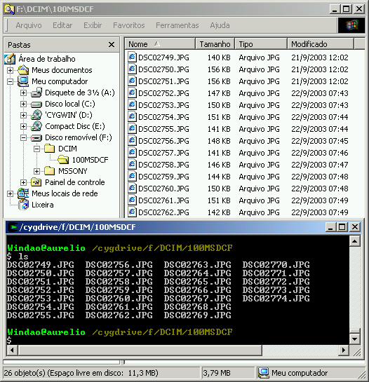

Bem-vindo ao portal brasileiro de Cygwin.
A idéia dessa página é centralizar todas as informações disponíveis em português sobre o Cygwin. Dicas, links, artigos, tutoriais, FAQ, imagens, depoimentos, se for sobre Cygwin, o lugar é aqui.
O que é Cygwin?
O Cygwin é um programa que se instala no Windows, trazendo o poder da telinha preta do Linux para o sistema das janelas. Não é preciso "dual boot" ou instalar o Linux, pois o Cygwin roda junto com o Windows. É mágica!
Arquivos da câmera digital mostrados no Windows Explorer e no prompt do Cygwin (bash)
Sendo apenas mais uma janela no ambiente, você continua usando seu Windows normalmente, e com um simples Alt+TAB, terá toda a flexibilidade e poder dos comandos do Linux, como bash, ls, grep, find, awk e amigos.
Basta baixar o setup.exe do Cygwin, escolher quais os pacotes que quer instalar e turbinar seu Windows. Tem de tudo: Python, Perl, man pages, VI, Emacs, mutt, pine, Apache, PostgreSQL e inclusive a interface gráfica (XFree86 e X.org)! É possível rodar o WindowMaker, KDE ou Gnome, tudo dentro de uma janelinha do Windows!
Confie no que digo: se você usa Windows, instale o Cygwin. Sua vida vai mudar, o Windows vai até ficar “legal” de usar.
Instalação
Dicas Rápidas para a Instalação do Cygwin
- Baixe o setup.exe e execute-o.
- Escolha
Install from Internet, para o instalador baixar os pacotes e já instalá-los. - Deixe sempre as opções padrão já selecionadas, não mude:
C:\cygwin,All Users,UNIX. - Faça a instalação mínima primeiro, apertando “Avançar” na tela da escolha de pacotes, SEM SELECIONAR NADA. Depois que o Cygwin estiver instalado e funcionando, use o Setup novamente para instalar os pacotes extras que desejar (uma coisa de cada vez pequeno gafanhoto).
- Como referência, o Adolfo da lista cygwin-br anotou quais os pacotes que vêm na instalação básica do Cygwin, são eles:
- ash, base-files, base-passwd, bash, bzip2, cygwin, diffutils, editrights, fileutils, findutils, gawk, gdbm, grep, groff, gzip, less, libgdbm, libgdm-devel, libgbm3, libgbm4, libgettextpo0, libiconv2, libintl1, libintl2, libncurses5, libncurses6, libncurses7, libpcre, libreadline4, libreadline2, login, man, mktemp, ncurses, readline, sed, sh-utils, tar, termcap, terminfo, texinfo, which, zlib, _update-info-dir
Artigo sobre Cygwin na Revista do Linux
Escrevi um artigo completo de 9 páginas sobre o Cygwin, que foi publicado na Revista do Linux edição 47, de Novembro de 2003.
Este artigo apresenta o Cygwin, ensina como instalá-lo no Windows a partir do CD da revista e dá várias dicas de configuração e uso do sistema. Leia na íntegra: Cygwin - O Linux no Windows.
Artigo sobre instalação do Cygwin via Internet
Wagner Ronieri França Costa escreveu um artigo sobre o Cygwin explicando como instalá-lo e também dá dicas de uso.
Como instalar e rodar o Cygwin direto de um pendrive
Veja o artigo Cygwin no pendrive, escrito por Meleu, para saber como instalar o Cygwin em um pendrive e poder usá-lo em qualquer computador.
Dicas / FAQ
Como Rodar o WindowMaker
Basta criar um arquivo .xinitrc (X init RC) no seu $HOME e torná-lo executável. Seguem os comandos necessários para fazer isso:
$ echo wmaker >> ~/.xinitrc
$ chmod +x ~/.xinitrc
Só é preciso fazer isso uma vez. Para chamar a interface gráfica, basta usar o mesmo comando do Linux:
$ startx
Dialog no Cygwin!
O Rodrigo Nakabashi disponibilizou em seu site uma versão do Dialog compilada para o Cygwin. Veja a mensagem completa do Rodrigo com instruções de instalação.
Sinais pra usar com o Trap
Os sinais no Cygwin são diferentes dos do Linux. O comando trap -l lista quais são eles. Para sua comodidade, aqui estão:
| # | Nome | # | Nome | # | Nome | # | Nome |
|---|---|---|---|---|---|---|---|
| 1 | SIGHUP | 9 | SIGKILL | 17 | SIGSTOP | 25 | SIGXFSZ |
| 2 | SIGINT | 10 | SIGBUS | 18 | SIGTSTP | 26 | SIGVTALRM |
| 3 | SIGQUIT | 11 | SIGSEGV | 19 | SIGCONT | 27 | SIGPROF |
| 4 | SIGILL | 12 | SIGSYS | 20 | SIGCHLD | 28 | SIGWINCH |
| 5 | SIGTRAP | 13 | SIGPIPE | 21 | SIGTTIN | 29 | SIGLOST |
| 6 | SIGABRT | 14 | SIGALRM | 22 | SIGTTOU | 30 | SIGUSR1 |
| 7 | SIGEMT | 15 | SIGTERM | 23 | SIGIO | 31 | SIGUSR2 |
| 8 | SIGFPE | 16 | SIGURG | 24 | SIGXCPU |
Arquivos de Configuração
.inputrc
# Acentuacao
set meta-flag on
set convert-meta off
set output-meta on
# TAB tratando igual maiusculas/minusculas
set completion-ignore-case on
# Fazer a tecla Insert colar
#"\e[2~": paste-from-clipboard
.bash_profile
# Listagem de diretorios usando cores
alias ls='ls --color=auto'
alias l='ls -la'
# Usar o Cygwin em Portugues
export LANG=pt_BR
# Editor de texto nano em Portugues
alias nano="LANG=pt_BR nano"
# Usar um Prompt personalizado
#PS1='\W) '
# Expansao de nomes de arquivos tratando
# igual maiusculas/minusculas
shopt -s nocaseglob
.nanorc
set smooth # rolar texto linha a linha
#set const # mostrar numero da coluna/linha
.vimrc
set textwidth=70 background=dark
set is hls ic scs aw ruler ls=2
syntax on
Outras Informações
Links
- Artigo completo (9 páginas) publicado na Revista do Linux
- Lista de discussão de usuários, em português
- KDE no Cygwin
- Gnome 1.x no Cygwin
- Gnome 2.x no Cygwin
- Página Oficial do Cygwin (FAQ)
- Lista completa dos pacotes disponíveis no Cygwin
Cygwin no IRC
- Português:
irc.brasnet.org, canal#cygwin - Inglês:
irc.freenode.net, canal#cygwin
Salada de Frutas: PC/PPC/Windows/Cygwin/Linux
Esses dias eu estava brincando com o Cygwin para escrever um artigo. Olha que massa o que dá pra fazer:
- Máquina 1 (Windão): Desktop PC com Windows 2000 e Cygwin
- Máquina 2 (iBook): Notebook PowerPC (Macintosh) com Linux
Ambiente de testes:
- As duas máquinas estão ligadas (ah, sério?)
- As duas máquinas estão conectadas via rede local, com um cabo crossover.
- O Cygwin está com o XFree86 instalado
- O iBook está com o Yellow Dog Linux (tipo RedHat) instalado e funcionando
- O XFree86 do Linux foi configurado para aceitar logins remotos
Procedimento:
- Do Windão, abri uma janela do Cygwin.
- Chamei o XFree com os parâmetros “-query IP-do-iBook”
- O XFree do iBook respondeu, mandando a tela de login (KDM)
- Entrei com meu usuário e senha do Linux, e...
Resultado:
- Do Windão, acessei o WindowMaker de uma máquina Linux remota, disparei programas, o usei como se estivesse na própria máquina remota. Com um Alt+TAB, estava de volta no Windows
- Tive um sistema Linux que roda num hardware PPC, funcionando numa janela de uma API POSIX (Cygwin), funcionando sobre um Windows em um hardware PC.
- Salada de conceitos, plataformas, sistemas operacionais e softwares &:)
Não acredita? Então veja:
 Clique na imagem para ampliar
Clique na imagem para ampliar
Quem disse que a informática não é divertida? &;)